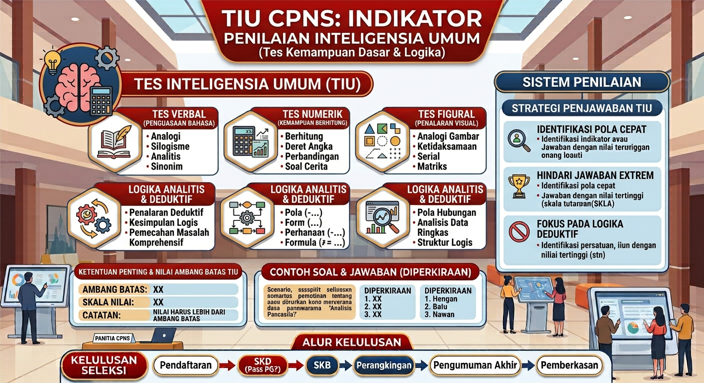

Pernah dengar keluhan dari peserta ujian tahun lalu yang bilang soal hitung-hitungannya susah banget sampai gak masuk akal? Selamat datang di era soal HOTS (Higher Order Thinking Skills). Saat menelusuri rangkuman Bedah Tuntas Materi TIU CPNS 2026, kamu pasti akan menyadari bahwa BKN perlahan mulai meninggalkan model soal hafalan rumus kuno. Sebagai gantinya, mereka memberikan ujian penalaran "sadis" yang mengharuskan otakmu berpikir dua hingga tiga langkah lebih jauh.
Soal tipe ini sengaja didesain untuk membuat peserta panik, blank, dan kehabisan waktu. Terjebak satu menit lebih pada satu soal HOTS sama saja dengan menyerahkan posisimu ke pesaing lain. Sebagai suplemen wajib dari Panduan Lengkap Lolos SKD CPNS 2026, kita akan meretas cara berpikir pembuat soal HOTS agar kamu tidak lagi merasa terintimidasi saat melihat paragraf hitungan yang panjangnya mirip novel.
Apa Sih Sebenarnya Soal HOTS TIU CPNS Itu?
HOTS bukanlah nama sebuah materi atau rumus baru. Ini adalah sebuah sistem atau level pengujian. Jika soal matematika biasa menanyakan "Berapa 10 ditambah 15?", maka soal HOTS akan menanyakan, "Jika Budi membeli 10 apel dengan diskon bertingkat dan mengembalikannya 15 persen besoknya, berapakah uang kembaliannya dalam bentuk pecahan?"
Soal HOTS menuntut kamu untuk tidak sekadar mengingat, melainkan menganalisis, mengevaluasi, lalu menciptakan jalan keluar dari informasi yang disamarkan. Kalau insting analitismu belum terasah, layar komputermu akan terasa seperti alien.
Ciri Khas Soal HOTS: Narasi Panjang dan Manipulasi Fakta
Mengacu pada bedah tuntas di Bocoran Resmi Kisi-Kisi CPNS 2026, soal HOTS di TIU biasanya dibalut dalam cerita aritmatika sosial yang panjang. BKN sangat suka memasukkan "Data Sampah" (dummy data).
Maksudnya, dari 5 angka yang tertera di sebuah paragraf soal, sebenarnya yang kamu butuhkan untuk menghitung jawabannya hanyalah 2 angka saja! Tiga angka sisanya hanyalah pajangan untuk memecah fokusmu. Cara terbaik menghadapinya? Baca kalimat terakhirnya (kalimat tanyanya) terlebih dahulu. Cari tahu apa yang sebenarnya ditanyakan, baru kemudian baca ulang ceritanya dari atas untuk memungut angka yang relevan.
Trik Membongkar Logika HOTS Tanpa Rumus Rumit
Di balik tampangnya yang menyeramkan, soal HOTS selalu punya jalan pintas logika. Pembuat soal BKN tahu bahwa tidak mungkin peserta menghitung kalkulasi desimal yang sangat detail dalam waktu 54 detik.
Untuk menaklukkannya, kamu harus menggabungkan insting numerik dengan insting logika bahasamu. Pendekatannya nyaris mirip dengan trik deduktif yang diajarkan pada Trik Cepat Menjawab Soal Logika TIU CPNS. Gunakan teknik estimasi atau pembulatan ekstrem. Jika soalnya berisi angka 24,7% dari 4.015, bulatkan saja di kepalamu menjadi 25% (seperempat) dari 4.000, yakni 1.000. Cukup cari jawaban yang angkanya paling mendekati 1.000. Berhenti menjadi si perfeksionis yang menghitung koma!
Jangan Terjebak Overthinking (Berpikir Berlebihan)
Saking takutnya dengan label "HOTS", banyak peserta cerdas justru gagal bukan karena tidak bisa, tapi karena overthinking. Mereka mencurigai setiap kata memiliki maksud tersembunyi, sehingga menghabiskan 3 menit hanya untuk satu soal.
Harus selalu kamu ingat, sifat perfeksionis berlebihan di ruang ujian CAT bisa membuatmu gagal mengamankan batas aman Passing Grade CPNS 2026 Terbaru. Tetapkan aturan: Maksimal 60 detik! Jika lewat dari itu nalar kamu belum menangkap polanya, tembak jawaban yang paling masuk akal, beri tanda bendera (ragu-ragu), lalu tinggalkan.
Asah Nalar Tingkat Tinggi Lewat Simulasi CAT
Kamu tidak akan pernah siap menghadapi soal HOTS jika belajarmu hanya dengan membaca buku teori yang pasif. Nalar tingkat tinggi (HOTS) adalah "otot" yang harus dikondisikan di bawah stres nyata. Integrasikan kebiasaan menjawab soal sulit berwaktu ke dalam jadwal belajarmu, seperti yang dijabarkan dalam Panduan Lengkap Latihan CAT CPNS 2026.
Ingat, sebelum berlari mengajar soal HOTS, pastikan fondasi berhitungmu sudah kokoh. Jangan ragu untuk me-review kembali teknik perkalian dasar dan pecahan istimewa di Bedah Tuntas Materi TIU CPNS 2026 agar kamu tidak terpeleset di perhitungan sepele.
Berani Tes Level Nalar Kamu Hari Ini?
Sudah ngerti cara mem-filter data sampah dan trik estimasi cepat? Jangan simpan ilmu itu cuma di kepala. Buktikan seberapa lincah otakmu memecahkan soal analisis tingkat tinggi! Uji mentalmu di medan simulasi ujian HOTS TIU dari MiVida secara gratis.
Mulai Tryout HOTS TIU GratisRekomendasi Bacaan CPNS dari MiVida
Tanya Jawab Seputar Soal HOTS TIU (FAQ)
Apa itu soal HOTS di TIU CPNS?
HOTS (Higher Order Thinking Skills) adalah tipe soal yang mendobrak kebiasaan lama. Soal ini tidak bisa dijawab hanya dengan ingatan rumus tunggal. Ia menuntut kamu untuk menganalisis narasi panjang, mengevaluasi data, dan menciptakan solusi nalar dari sebuah masalah kompleks.
Bagaimana ciri khas soal HOTS pada numerik CPNS?
Ciri paling menonjolnya adalah narasi cerita yang panjang dan ketersediaan data "sampah" (dummy data) yang sengaja dibuat berlebih untuk mengecoh peserta. Kamu dituntut untuk memiliki kemampuan memfilter mana angka yang benar-benar relevan dengan pertanyaan.
Apa trik cepat menjawab soal HOTS agar tidak kehabisan waktu?
Trik terpenting adalah membaca kalimat terakhir (pertanyaan intinya) terlebih dahulu sebelum membaca paragraf cerita dari awal. Selanjutnya, pakailah teknik pembulatan/estimasi ekstrem. Jangan pernah mencoba menghitung angka desimal yang kompleks secara teliti jika opsi di pilihan gandanya berjarak cukup jauh satu sama lain.